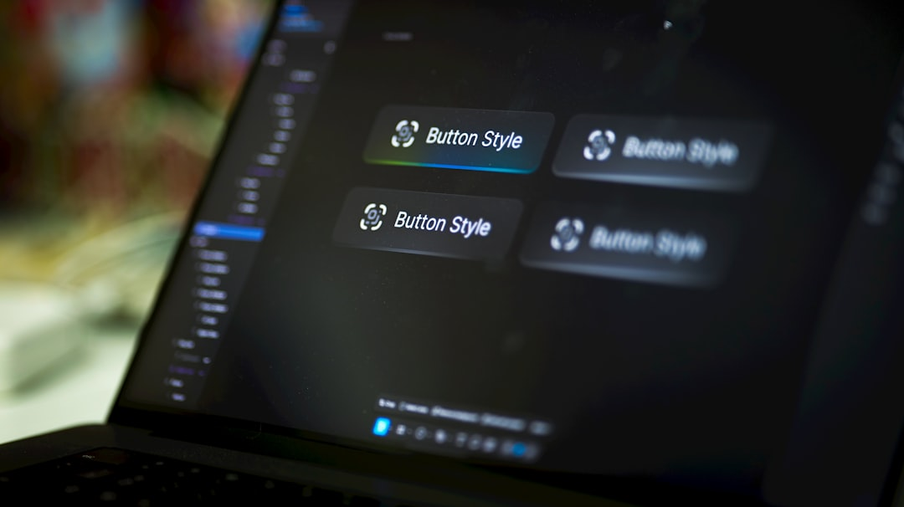

BME Solar Boat — Embedded Systems
Safety-critical C application for ESP32, engineered for throttle signal reliability with FreeRTOS task management and watchdog timers. Managed ADC sensor telemetry at 50Hz.
Computer science student at ELTE in Budapest, building embedded and mapping projects that connect software to the physical world and explore resilient infrastructure.
Read the blog See my favs
Safety-critical C application for ESP32, engineered for throttle signal reliability with FreeRTOS task management and watchdog timers. Managed ADC sensor telemetry at 50Hz.
Award-winning team project automating SAR imagery analysis with a Python backend and GIS libraries to visualise flood progression using ESA Sentinel-1 satellite data.
Improved muon track reconstruction precision by applying Chi-squared tests at the HLT1 stage and optimising C++ dependency management in a distributed Linux environment.
This block is ready for the narrated clip from the media folder.
The player loads media/intro-presentation.mp4 and falls back to a poster image if the file is unavailable.
Deep focus on embedded systems, climate technology, and mapping systems - combining low-level C/C++ engineering with GIS, sensor integration, and real-world infrastructure.
| Area | Technologies | Projects |
|---|---|---|
| Embedded Systems | C, C++, FreeRTOS, ESP32, CAN/TWAI, UART | BME Solar Boat, hardware prototypes |
| Climate & GIS | Python, GeoPandas, Rasterio, Sentinel data | CASSINI flood monitoring, satellite analysis |
| Data Analysis | C++, Python, statistical methods, Linux | CERN LHCb particle physics research |
| Infrastructure | Systems thinking, CAN protocols, sensor networks | Resilience-focused engineering, IoT concepts |
| Development | Git, Bash, computer networking, Java | Cross-platform project management |
Technology is most interesting when it becomes tangible - when it connects software to the physical world, makes invisible systems visible, and shapes how people experience infrastructure and place.
The best projects are usually the ones that feel handcrafted, balance technical depth with aesthetics, and keep the work exploratory instead of purely career-shaped.
"Most of my ideas start while walking through cities. Side projects matter because they preserve creativity, reduce burnout, and encourage experimentation."